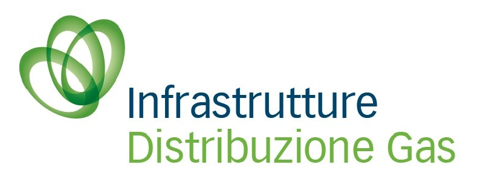
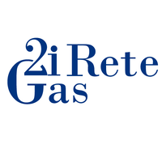
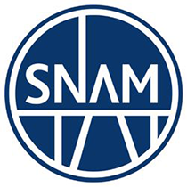

Società di distribuzione e trasporto del gas, multiutility e imprese di costruzione che
si sono affidate a CISAC per la protezione catodica delle loro strutture interrate.



Vuoi aggiungere la tua azienda a questo elenco?
Raccontaci il tuo impianto: i nostri tecnici certificati valuteranno la soluzione di
protezione catodica più adatta.